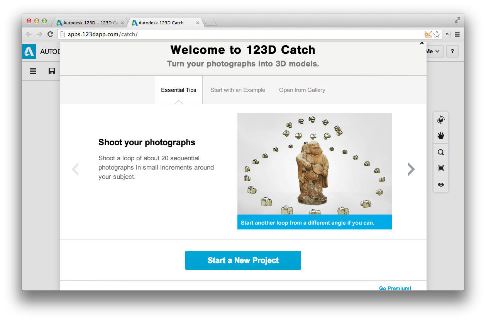

The Splendid Definition
Photogrammetry involves tools and techniques that allow you to create 3-dimensional objects and spaces using 2-dimensional data and source material.
Demo: Kinect and Skanect
Demonstration using the unlicensed version of Skanect and a Kinect for xBox.
Demo: Point-and-shoot camera
- Select an object. If possible, set it up in a way conducive for photogrammetry with a camera.
- Take a bunch of pictures of the object, from a variety of angles.<./li>
- Upload photos to 123 Catch online application to generate model.
- Download model and clean up in 123D Catch or MeshMixer for viable 3D printing.
Shooting Tips
Take 40–50 shots:
- One set at eye-level, with you moving in a circle around the object and stopping every 20-30 degrees to take a shot.(~15 total pics)
- Using the same process, point the camera down at the object at about a 45-degree angle.
- Take a shot straight down on the object
- Use remaining shots to take shots that get more detail. Move closer in to the object (don't zoom!)
Shooting Tips
- Avoid shiny surfaces and lots of contrast
- You move around, not the object. Don't move the object.
- The object should fill the frame.
- Set the object in a place where you can move around it, and with plenty of other things going on in the background.
Shooting Tips
- Keep settings on the camera the same for all shots, including:
- ISO
- Shutter Speed
- Aperture (f-stop)
- Focus
- White balance
- Use a lower ISO setting if possible
- Use a higher aperture setting if possible
- Disable flash; set your object in diffused light as much as possible.
Make Your Model
Sign up for a free account at 123D App.
